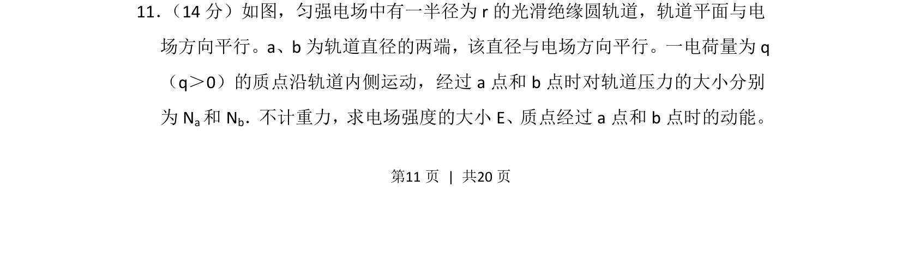
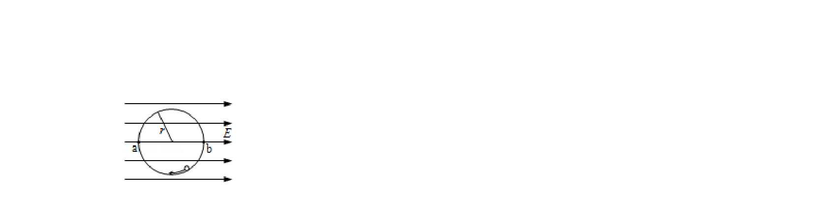
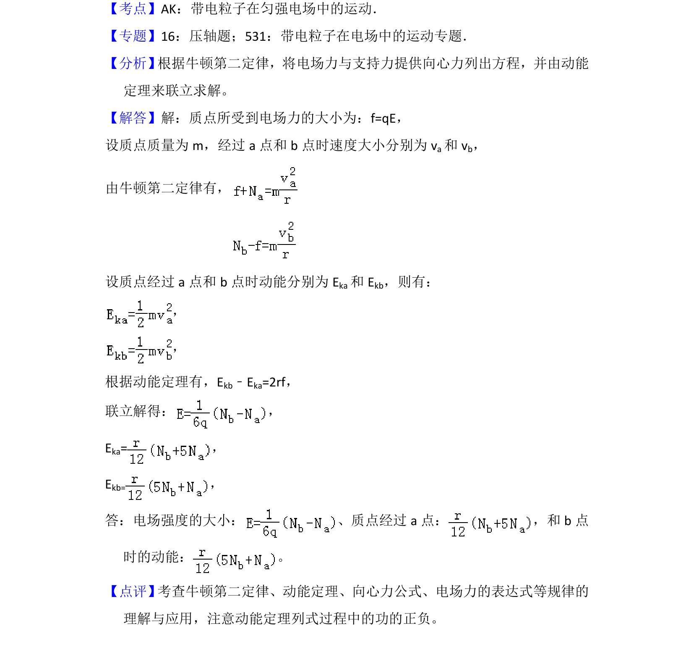

考点：牛顿第二定律 动能定理 向心力 电场力


一电荷在匀强电场的光滑绝缘圆轨道运动，结合向心力公式和动能定理求场强及动能

📄 原 PDF 第 11 页：
素材/真题/吉林/2008-2024·（吉林）物理高考真题/2013年高考物理试卷（新课标Ⅱ）（解析卷）.pdf
11． （14分）如图，匀强电场中有一半径为r的光滑绝缘圆轨道，轨道平面与电 场方向平行。a、b为轨道直径的两端，该直径与电场方向平行。一电荷量为q （q＞0）的质点沿轨道内侧运动，经过a点和b点时对轨道压力的大小分别 为N a和N b．不计重力，求电场强度的大小E、质点经过a点和b点时的动能。